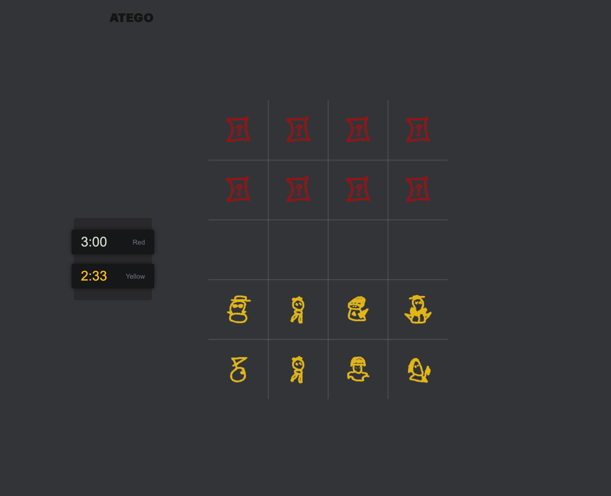
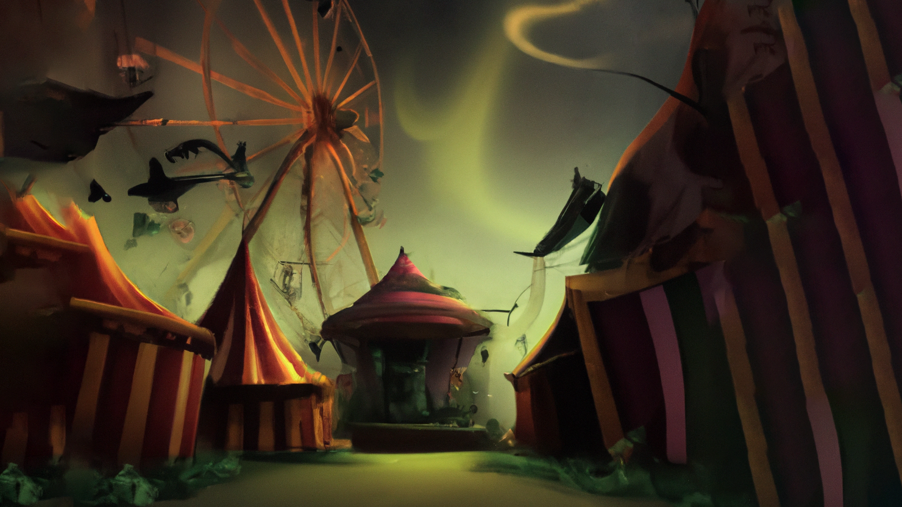

Werewolf
Developed with two friends during my exchange semester in Ljubljana, this project is an automated version of the social deduction game. It eliminates the need for a human narrator by using mobile-based audio guidance and real-time synchronization.
Grid Systems
A geographic grid visualizer built with OpenLayers. It supports real-time rendering and interaction with multiple global grid systems including H3, Geohash, and Quadtrees, featuring advanced selection tools and URL-based state sharing.

Atego
Atego is a strategic 2-player board game inspired by "Stratego".

Bot Breakout
Developed as a course project during my CS studies at TU Berlin, Bot Breakout is an AI-driven "Escape Room" chatbot. Players are challenged to solve mysteries through natural language interaction and logical deduction.